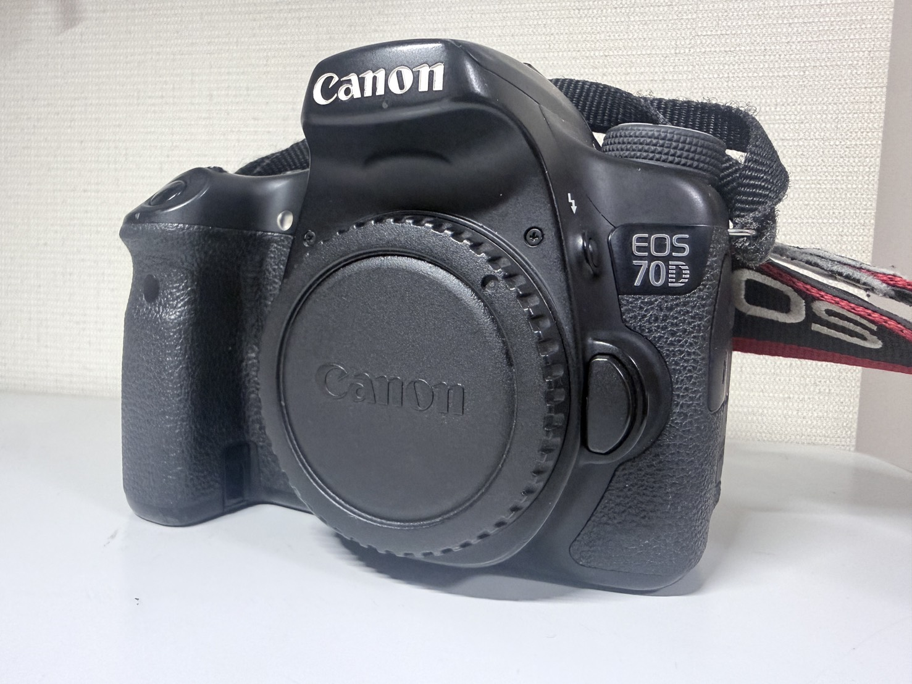
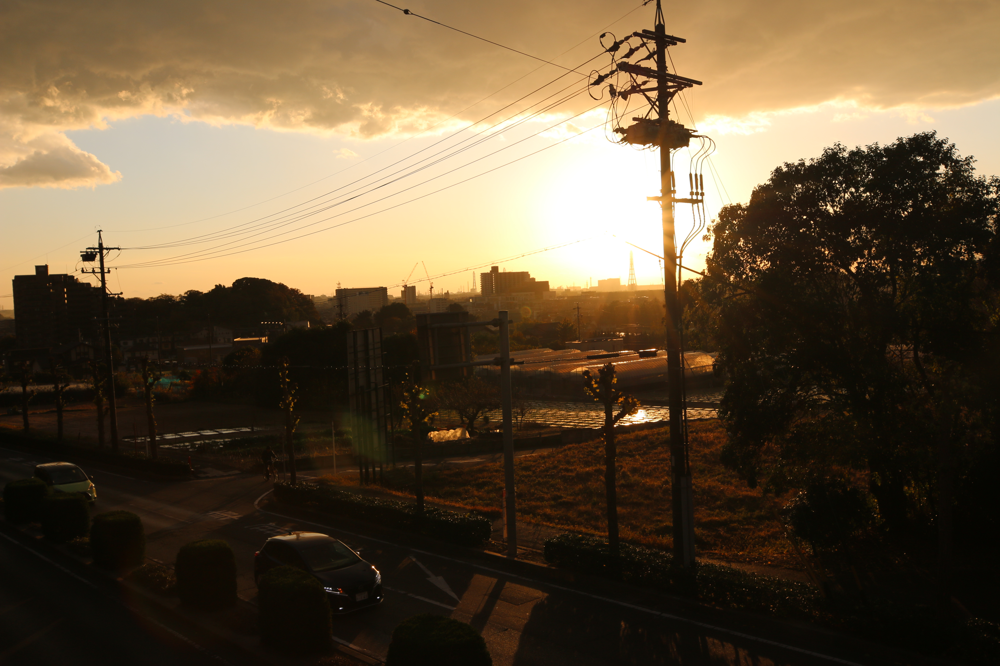

【CANON EOS 70D】
【カメラの始まり】
基本情報
| メーカー | 【CANON】 |
|---|---|
| 機種名 | 【CANON EOS 70D】 |
| 発売年 | 【2013年】 |
| 使用フィルム | 【デジタルです！】 |
| 撮影方式 | 【APS-Cサイズ・デジタル一眼レフ】 |
| レンズマウント | 【EF・EF-sレンズ】 |
| シャッター | 【電子制御式、フォーカルプレーンシャッター
1/8000～30秒、バルブ、ストロボ同調最高シャッター速度＝1/250】 |
| 露出 | 【63分割TTl開放測光・評価・部分・スポット・中央重点平均測光】 |
外観

何と言いますか、”THEカメラ”みたいな感じですよね。 まぁ、2013年のカメラですし、特段おかしいところはないです。逆に”中級・初心者用”として お勧めされるくらいにはいいカメラだそうです。
特徴
個人的には、このカメラは興味を持つ前に使い込んだ？カメラなんですけど、特段の不満はありませんでした。 まぁ、ないなりに無理をしてあげるなら消去するときにいちいち「消去」のほうにダイヤル回さないといけない くらいですね。（それもニコンを触ってから感じた）
スペック
書くのめんどいんでバッサリ省きますけど、ほんとに”困ることがない”。
動画も撮れるし、写真もしっかり撮れる。スマホと連動して遠隔撮影もできるし、データも取り出せちゃう。
ほんとに困らないなぁ・・・。って感じです。
（まぁそもそも論、デジタルカメラとフィルムカメラで比べて・・・って面もかなりあるとは
思いますがね）
実際に使ってみて
実際に結構使いましたが、写りも悪くはないですね。
作例は山ほどあるので困るっちゃ困るんですけど、どうせなら初期のほう、そんなにカメラに
目覚めてないものを作例として出しましょうか。そっちのほうが
素人が使ってもどんな写りなのかがわかると思います。
これからの写真は初期のころの奴なので撮影時期以外は全部不明です・・・。悪しからず。

そう、初心者が適当にとっても滅茶苦茶いい感じに映ります。 なので初心者用に勧められていもわかるようなカメラです。
撮影について
操作方法などでも特段の不満はないですね。MFとかのMモードにしても特に重大な欠陥があるわけじゃないですし。 ほかの方のレビュー見ても、酷評されてたりはしてないですし、バランスのいい感じですね。 だけどちょっと気になるのはライブビュー撮影（覗くんじゃなくて画面で見ながら撮るミラーレスみたいなの） だと復帰が気持ち遅いかなぁって感じ。それもストレスってほどじゃないし。 とにかく不満点は（今のところ）ないですね。
入手について
元々親が使ってたのをそのまま譲り受けた形なので、何年に買ったとか、 いくらかとか、そこら辺の詳しいことは知りません。 物事ついた時からあって、自分の中の「カメラ＝これ」みたいな認識が強固にあります。 幼稚園の時くらいからあった感覚ですし、人生大体こいつと一緒に過ごしてる感じ。 親がiPhoneのカメラ性能を見て「こんなんならカメラいらんやん」となって久しく埃をかぶっていましたが ひょんなことから私が興味を持ったため引っ張り出してきました。 今のところデジタルカメラの中だとバリバリのメイン機ですね。 ”愛機・相棒”なんて呼んでも嫌にならないくらいには信頼してるし、使いました。
金額とか
上記理由のよりただで手に入れました。特にその他支出もしてないですね。
現在の状態
一切の問題がなく、完動です。このまま使い続けたい！
まとめ
このカメラは私に「カメラとは何か」を根本から教えてくれた機械です。 そして写真の楽しさを学べた気がします。 本当にこのカメラには感謝しか湧きません。 ありがとう70D、これからもどうぞよろしく。